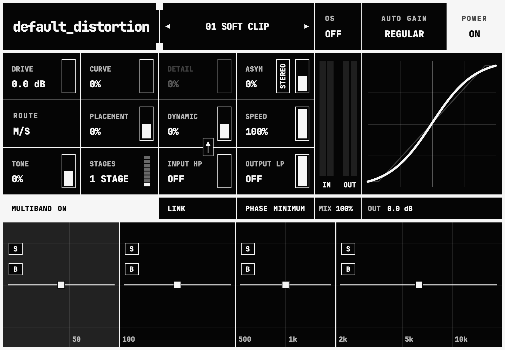

01 / 02
default_distortion

default_distortion is designed to be your ultimate go-to plugin whenever you need to clip, saturate, distort, or completely degrade your audio signal.
- 30
- CLASSIC SATURATION ALGORITHMS
- MULTIBAND
- 4 LINKED OR INDEPENDENT BANDS
- AUTO GAIN
- TWO DISTINCT ALGORITHMS
- SIMPLE
- ENOUGH TO MAKE PRESETS UNNECESSARY